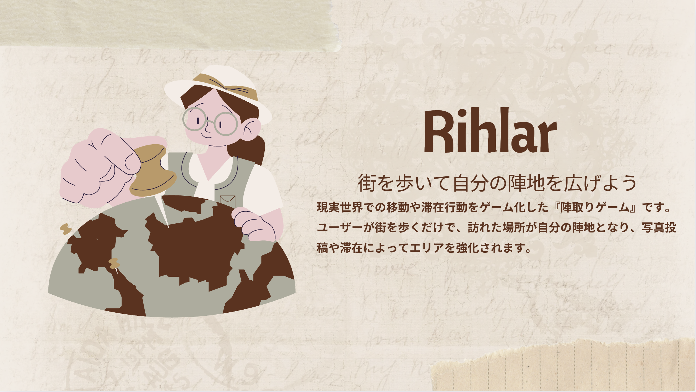
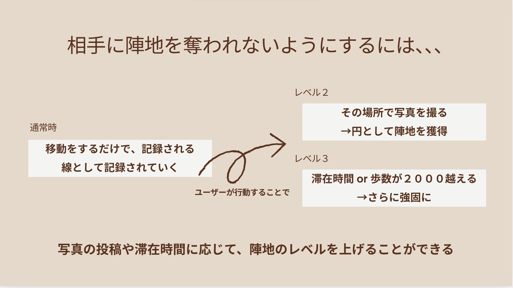
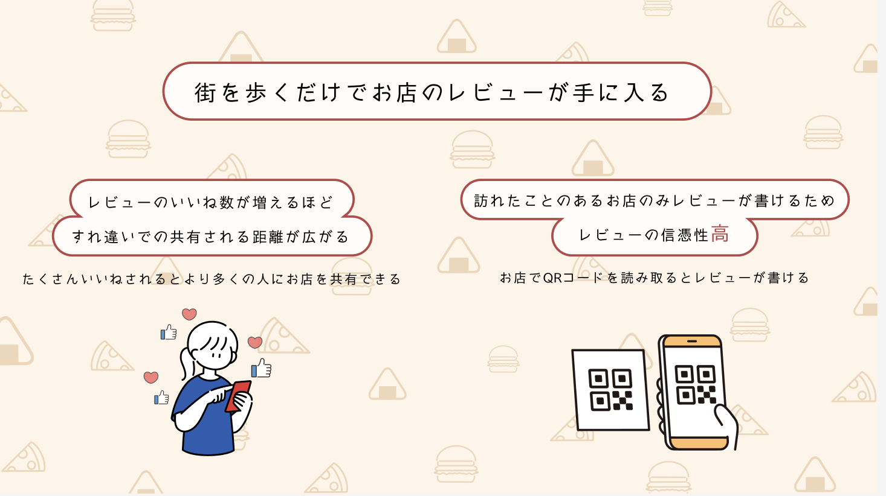
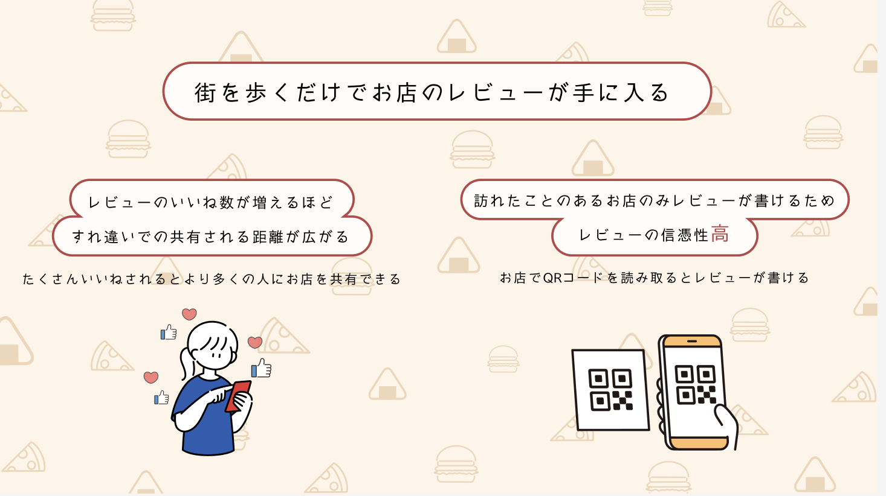

Rihlar - 街を歩いて自分の陣地を広げよう 作成中
概要: 現実世界での移動や滞在行動をゲーム化する“陣取り型ライフログアプリ”です。
役割: 企画立案、プレゼンテーション、リーダー、UI設計、swiftによるフロントエンド開発
特徴: ユーザーが街を歩くだけで、訪れた場所が自分の陣地となり、写真投稿や滞在によってエリアを強化。 仲間とチームを組んで、他のチームと競い合うことで、毎日の移動に「意味」や「達成感」を与えます。
GitHubを見る 
